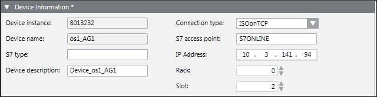
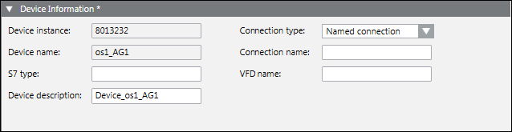
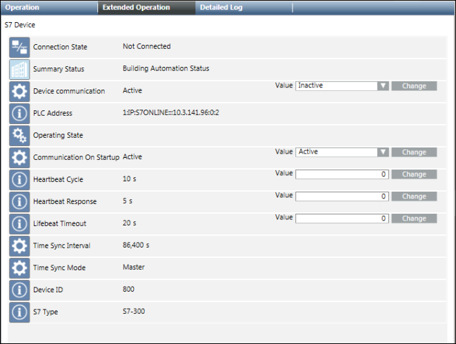

Configure an S7 Device
- An S7 device is imported.
- Select Project > Field Networks > [S7 network] > [S7 device].
- In the S7 tab, open the Device Information expander.
This expander displays the S7 device data settings. You can view the Device instance (S7 device numeric ID) and Device Name (name of the S7 device) and modify the following parameters: - S7 type: (S7 CPU type)
- Device description: (S7 device short description)
- The display varies depending on the connection type.
Connection type: ISOonTCP (IP)
S7 access point: Is always S7ONLINE
IP Address: Displays the IP address of the PLC used to establish a connection to a PLC
Rack: Displays the S7 CPU rack number
Slot: Displays the S7 CPU slot number
- Connection type: Named connection (NC)
Connection name: Name of the PLC redconnect communication configured in Step 7 of section: Configuring S7 REDCONNECT. Colons (:) and slashes (/) are not allowed as they are used as delimiters in a connection entry.
VFD name: VFD name of connection configured in Step 7 of section: Configuring S7 REDCONNECT.
- Open the Time Sync Information expander and set the following parameters:
- Time Sync Mode: This parameter determines if and how the current time on the PLC will be accessed and/or modified. The following values are allowed:
Ignore – The time on the PLC is neither read nor written.
Master – The time on the PLC is changed to the current time of the HMI station.
Slave – The current time is read from the PLC in the configured interval (TimeSyncInterval). - Time Sync Interval: This interval in seconds determines how often the current time is read from/written to the PLC.

- Click Save
 .
.
- The new node displays in System Browser.

Communication On Startup: To enable or disable device communication on driver. Changes are only applied after restarting the driver.
Device communication: To stop or start device communication online (driver is already started).
Lifebeat Timeout: The timeout in seconds used by the driver to monitor connection errors.
Heartbeat Cycle: The timeout in seconds between heartbeat requests sent to each connection.
Heartbeat Response: The maximum amount of time that is allowed to pass without any response from each connection before a connection failure is assumed.

NOTE:
1. If Communication On Startup = Active: The device will start to communicate upon the start of the driver, even if Device communication is Inactive.
2. If Communication On Startup = Inactive: The device will not start to communicate upon the start of the driver.